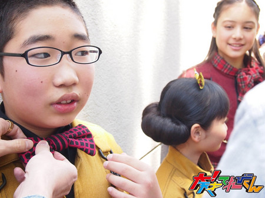
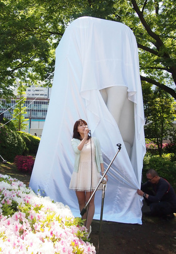
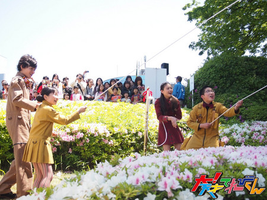
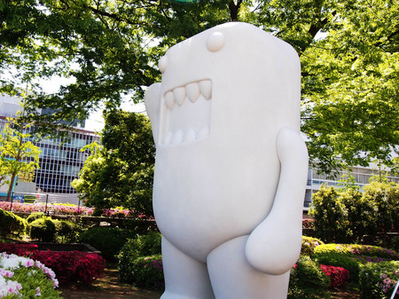
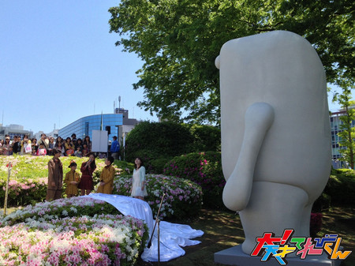
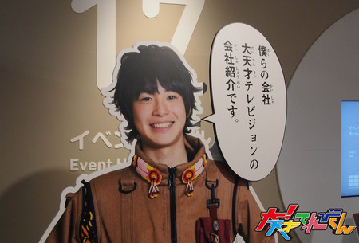

【人生の中で最高に恥ずかしかった失敗】竹原司
こんにちは！！司です！
人生で恥ずかしかった失敗は・・・
まぁ、恥ずかしいことを自分から
『バンッ！！』とやる性格だからな・・・。
恥ずかしかったことといえば、
最近学校の体育で
いろいろな走り方をやっていて、
四つんばいで犬みたいに走る走り方をやる前に
「これ得意！」と言っておきながら
ビリになって、
「ぜんぜ〜ん得意じゃないじゃん。」
と友達に言われて
恥ずかしかったー！
次に書くのはみれなちゃんです！！
みれなちゃんは、
よくツッコんでくれて、よく笑ってくれるので、
ギャグをやったがわとしては
とてもうれしいです。
この前は、
僕がギャグをやってしらけたのに
笑ってくれて
すごくうれしかったです。
みれなちゃんには
これからも笑っていてほしいです！
投稿者:竹原司 | 投稿時間:18時00分 | カテゴリ：We are 大天才テレビジョン | 固定リンク


 " title="ソーシャルブックマークについて">
" title="ソーシャルブックマークについて">
※NHKサイトを離れます。
【速報】てれび戦士除幕式に出るの巻
本日、５月３日（金・祝）からNHK放送センターで開催しているイベント「渋谷DEどーも」。
それを記念して体長４ｍの巨大どーもくん像がお披露目されました。
その除幕式に参加したのはなんと金子、ニイナ、島田、延命ちゃん！！

では蝶ネクタイを直してもらっている島田の写真から、その模様をご覧頂きましょう。

白い布に包まれた怪しい物体…これがもしや……

司会：それではどうぞ！ てれび戦士：どうもー！！
お約束のやりとりがあって、てれび戦士の４人がひもを引っ張り幕を外します。

除幕されたどーもくん。白い！白すぎる！！

今にも動き出しそうですが、微動だにしません。そして４ｍは大きいですねー

なお、ＮＨＫ放送センターとなりのスタジオパークにて、「大！天てれ展」が開催中です。
会期は５月１９日（日）までですが、２日（木）〜６日（月）までは無料公開デー！誰でも無料で入場できます。
てれび戦士たちが除幕したどーもくんを見てからお越しください。
詳しい情報はこちらからチェック！
投稿者:大天才テレビジョン社員１号 | 投稿時間:15時00分 | カテゴリ：お知らせ！ | 固定リンク
" title="ソーシャルブックマークについて">
※NHKサイトを離れます。